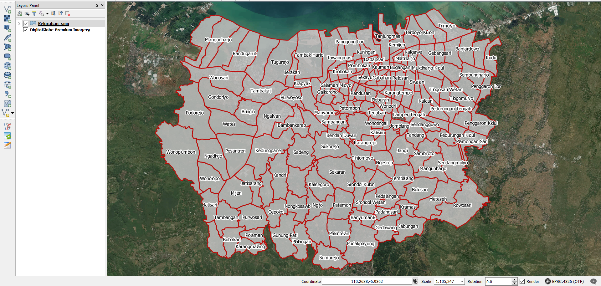
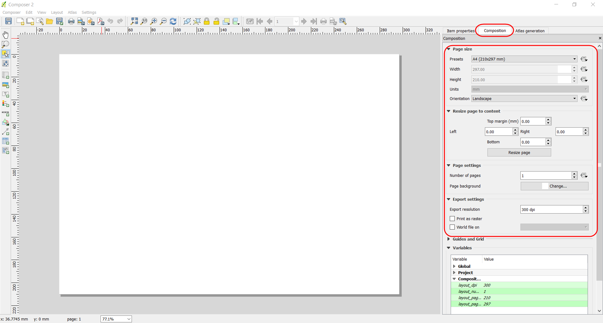
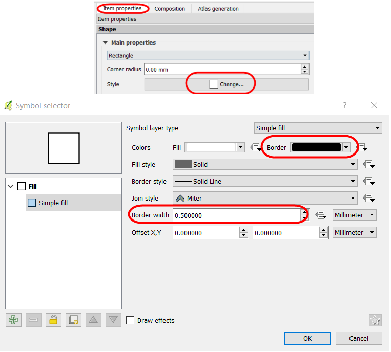
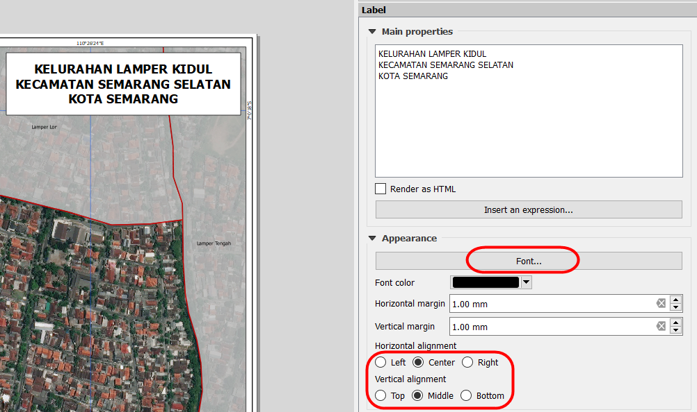

Creating Field Maps using QGIS
Objectives:
- To be able to operate QGIS to install QuicMapServices Plugin
- To be able to operate QGIS to create a field survey map
Field maps are used to advise data entry in identifying the locations during the field survey. If data entries have gotten the administrative boundary with the government in the village office, a field map can be used to delineation the administrative boundary. Then we can bring the map to our office and input the boundary using JOSM. How to create the filed map? We can use QGIS version 2.14.22 in this chapter, QGIS is a professional GIS application that is built on top and proud to be itself Free and Open Source Software (FOSS). We can download the QGIS application on https://qgis.org/.
I. Download and Install QGIS
- Open the browser and go to http://qgis.org/
- The window will appear like the image below:
- Click on Download Now → All Releases → click here on Older releases of QGIS are available to search and find QGIS version 2.14 or we can download in this link: http://download.osgeo.org/qgis/win64/QGIS-OSGeo4W-2.14.22-1-Setup-x86.exefor Windows 32 bit and http://download.osgeo.org/qgis/win64/QGIS-OSGeo4W-2.14.22-1-Setup-x86_64.exe for Windows 64 bit.

- If you using another operating system, choose the operating system with Index of QGIS

- If you already have the QGIS application, you can directly install QGIS and follow the instructions.
II. Install the QuickMapServices Plugin on QGIS
QuickMapServices is a plugin that makes work with web-based basemap easy. We need an internet connection to download this plugin in QGIS. These are the step by step to install the plugin:
- Open QGIS and ensure the internet connection is working. Click on Plugins Menu → Manage and Install Plugins

- Type QuickMapServices in the Search box and click on Install Plugin

- If the installation has finished, the next step is creating the field map.
III. Preparing the Data
Before we start to create the field maps, we have to prepare the shapefile of the administrative boundary. If you have other spatial data such as roads, it will be useful to use the data in the field map. The steps to preparing the data:
- Add the data layer in QGIS layer with click on Add Vector Layer

- We can change the style of the layer with symbology and labeling.
- To symbology, We can directly right click on boundary layer → Properties → Style → Categorized. Navigate the cursor to Column → search the column name as village → Classify. If we want to change the symbology, click on Symbol → Change.

- To add the labeling, open the layer properties window like before and click on Labels → Show labels for this layer → search the column name as the village. We can adjust the font label in Text Menu, adjust the shadow label in Buffer Menu, and setting the placement label in Placement Menu.

- The result will show likely image below:

- To add the basemap on your maps, click on Web Menu → QuickMapServices → Search QMS. The plugin will show up in the right panel, we can type the name of available imagery, an example DigitalGlobe Imagery.

- In the QMS window will appear to lists the imagery with the name, click DigitalGlobe Premium Imagery. Please wait for the moment until the imagery shows up in your map canvas.

- Save your QGIS project by Project Menu → Save → Type the name → Save. An example, the name is Field Map.

IV. Creating the Layout with Map Composer
- In the first step, we can create the new composer with Project Menu → New Print Composer. The composer window will show up in your QGIS project.

- The Composition Menu. The orientation map used to adjust the paper size, orientation, margin, and export resolution. You can do the setting in Composition on the right panel.

- To add the outlines in the layout with

- To add the maps by Add a new map, and click on the layout → create the square. We can change the map scale and map view with the Item Properties in the right panel.

- To add the grid with Item Properties → Grids → Click the button + → Draw Grid. The grid setting is a grid type and interval. The Interval based on a type of coordinate. To add the coordinate checklist on Draw coordinate and adjust the coordinate position in each grid.

- To add map title click on Add new label → click in map layout the position the map title. The Font settings to change the appearance of the label, click the Horizontal alignment → Center to move the position in the center as horizontal and click Vertical alignment → Middle to move the position in the center as vertical. 
- To add the arrow for direction by tools Add Image → Item Properties → Search Directories. Click on the layout and draw the box and choose the image in search directories what is arrow symbol.

- To add the scale bar by tools Add new scalebar. To add the scale map in numeric, change the Style in Main Properties with numeric. You can set the segments of scale bar in segments unit.

- To add the source of the data layer by tools Add new label. You can fill the information about data source with “DigitalGlobe Premium Imagery (www.digitalglobe.com) © Digital Globe”.

- If the map layout has finished, we can export the map as an image in jpg, png, pdf file. Click on Export as Image to start the export map to JPG, PNG, PDF, and SVG file. Before the exporting process, you can set the export resolutions to ensure the image resolution will result in the best image. Click on Export resolutions 300 dpi is the best result image.

- After the export has finished, the result will show up like the image below
SUMMARY
If you can follow the whole instructions in this chapter, you have learned and practiced how to create the field map using the QGIS. You can create the field maps based on village administrative level to easy on the printout and bring to the field. The field maps will be used by data entry to identify the location, digitize the boundary, and mark the objects.